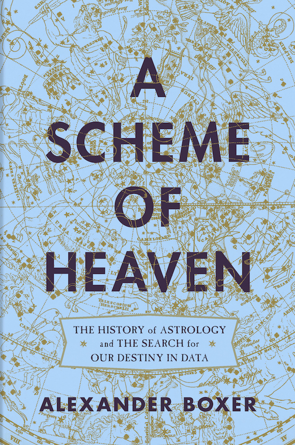

◥
Year
Month
Day
Hour
Minutes
أسطرلابAstrolabe
| λ | β | RA | Dec | Az | El | House | ||||
| Saturn | ♄ | |||||||||
| Jupiter | ♃ | |||||||||
| Mars | ♂ | |||||||||
| Sun | ☉ | 0.0° | ||||||||
| Venus | ♀ | |||||||||
| Mercury | ☿ | |||||||||
| Moon | ☽ | |||||||||
| Ascendant | H | 0.0° | 0.0° | ① | 0°00' | |||||
An astrolabe is a beautiful, mathematical map of the ancient, Earth-centered cosmos. The instrument shows the spherical universe flattened onto its midplane (the equator) according to a mathematical transformation called stereographic projection. The result is a god's eye view of creation looking down from atop the universe's north pole. Astrolabes were the indispensible instruments of astronomers and astrologers alike from Greco-Roman antiquity well into the scientific revolution. I've created this website to showcase the elegant workings of one of antiquity's most wondrous machines.
The MATER (Latin: "mother") is a circle-shaped container holding all the pieces of the astrolabe. The raised, outer rim of the Mater is the LIMB. The Limb's markings divide the cosmos (here flattened onto its celestial equator) into 360 degrees and 24 hours.
Highlight:
The INDEX (Latin: "pointer") is a simple pointer that makes it easy to read heavenly bodies' coordinates in multiple reference frames. When pointing to the Sun, the Index functions like the hour-hand of a modern clock.
Visibility:
Pin to Sun:
The RETE (Latin: "net") is a decorative framework upon which pointers to bright stars are fastened.
Visibility:
The ECLIPTIC (Greek: "pertaining to eclipses") is an imaginary circle in the sky that tracks the Sun's apparent annual motion. This circle is tilted with respect to Earth's equator by about 23.4° — a tilt that gives us the seasons of spring, summer, fall and winter. On an astrolabe, this tilt manifests itself as an offset of the Ecliptic circle from the instrument's center. Due to the solar system's disk-like structure, the orbits of the Moon and planets also hew closely to the Ecliptic, with none straying from it by more than ± 9° of ecliptic latitude.
Highlight:
The TYMPANUM (Latin: "drum") is the central disk showing the most important celestial arcs. Since the grid of azimuth and elevation lines is suited to a single latitude only, astrolabes came equipped with multiple Tympana which could be swapped in or out depending on location.
Highlight:
The TROPIC OF CAPRICORN marks the Sun's southernmost orbital excursion and, traditionally, the outermost edge of an astrolabe's map of the cosmos.
Highlight:
The EQUATOR marks the midplane of the Earth-centered celestial sphere. The Sun crosses the equator on the spring and fall equinoxes.
Highlight:
The TROPIC OF CANCER marks the northermost excursion of the Sun as seen from the Earth.
Highlight:
AZIMUTH LINES show compass bearings (north, south, east, west, etc.) for an observer at the specified latitude. Since the astrolabe presents the cosmos from a god's-eye perspective (looking down from above the North Pole), the top of the instrument is south, east is to the left, and west is to right.
Highlight:
ELEVATION LINES, often referred to by their Arabic name, ALMUCANTARS, mark circles at fixed heights from the horizon (elevation 0°) to zenith (elevation 90°) for an observer at the given latitude.
Highlight:
Astrolabes are designed to represent the daily rotation of the starry sky as seen from a particular latitude on Earth. Unlike astronomical clocks or planetaria, an astrolabe has no capability of modeling the orbits of the Sun, Moon, or planets. Nevertheless, date-specific positions of HEAVENLY BODIES, obtained from an almanac or direct observation, can be marked on the astrolabe and used to determine, for example, rising and setting times.
Stars and Sky
Sun
Moon
Planets
The HOUSES OF HEAVEN are twelve sectors of the sky which are important primarily for astrology. Historically, multiple systems of cusps, or dividing-lines, have been proposed for delineating the Houses.
CAMPANUS CUSPS divide the sky into twelve symmetric sectors, similar to the wedges of an orange. These sectors evenly divide the observer's east-west azimuth line, also called the PRIME VERTICAL. Due to their symmetry, Campanus cusps are the only cusps which support fractional House coordinates; all other systems define only whole House numbers.
Highlight:
Prime Vertical:
REGIOMONTANUS CUSPS are great circles drawn from the observer's north and south horizons to twelve, evenly-spaced points on the celestial equator. Regiomontanus cusps divide the sky into twelve sectors of unequal sizes.
Show:
ALCHABITIUS CUSPS trisect the four quadrants of the celestial equator as defined by the four cardinal points of an observer's sky: ascendant, midheaven, setting, and lower-midheaven.
Show:
UNEQUAL HOUR LINES define 12 sectors below the horizon corresponding to the 12 "unequal" or "seasonal" hours of the night. The nighttime hour lines of an astrolabe are equivalent to the first six cusps of the PLACIDUS House system.
Show:
PRAYER LINES often appear on astrolabes from the Muslim world since the timings of Islam's five daily prayers are determined astronomically. From left to right these curves indicate Fajr (dawn), Asr (afternoon), Zuhr (mid-day), and Shafaq (twilight). The Sun's position is found by joining, via the astrolabe's index, a point on these curves to a corresponding point in the astrolabe's upper-right (western) quadrant.
Show:
 A Scheme of Heaven
A curious skeptic's history of astrology — humanity's original data science!
My own book on the topic, where I recast astrology as "the ancient world's most ambitious applied mathematics problem." My narrative gives heavy emphasis to the technology of the astrolabe. Note: the UK printing has a different cover and subtitle, but the books are otherwise identical.
James E. Morrison's astrolabes.org
The web's best astrolabe site, and the one that sparked my own interest in astrolabes many years ago, sadly reduced to solely an archive since the passing of its creator in 2016.
Astrolabes of Oxford's History of Science Museum
The largest and most important collection of astrolabes anywhere in the world.
Year
value: 0
position: 1.500
dy:
century:
Month
value: 0
position: 1.500
dy:
Day
value: 0 of 0
position: 1.500
dy:
Hour
value: 0
position: 1.500
dy:
Minutes
value: 0
position: 1.500
dy:
lat: 40
utc year:
local year:
JD:
GMST:
lon:
utc month:
local month:
JD local:
LMST:
leap year:
utc day:
local day:
leapval buffer:
asc:
daylight saving:
utc hour:
local hour:
qq:
mc:
UTC offset:
utc minutes:
local minutes:
local seconds:
run status: run
ff speed: 0
rr speed: 0
sky flag: 1
rete initial rotation:
rete new rotation:
cursor angle0:
delta theta:
cursor angle1:
jd_local buffer:
dphi: 0
fringes: 0